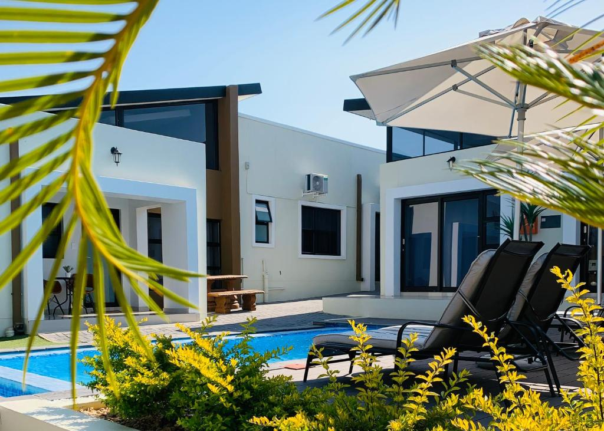
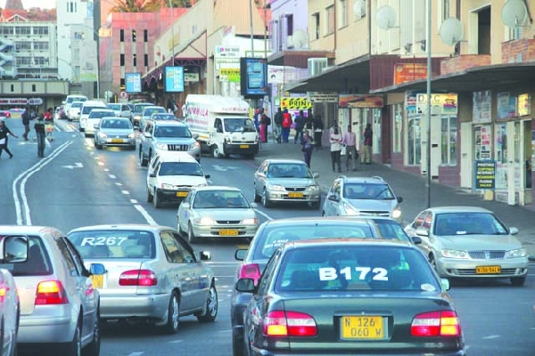
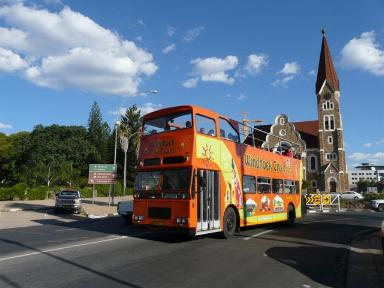

Plan Your Visit
Find practical details for your trip to Windhoek.
Accommodation
Windhoek provides various lodging choices, from upscale hotels to comfortable guesthouses and hostels, and self-catering apartments.

Transportation
Visitors can get around the city with taxis, car rentals, or private transportation services. The best way to travel will depend on the travellers preferences and budget.

Itinerary Assistance
Many local tour operators offer a diverse array of itineraries and tours. From city tours to day trips to nature reserves, the options available will suit most travellers.
